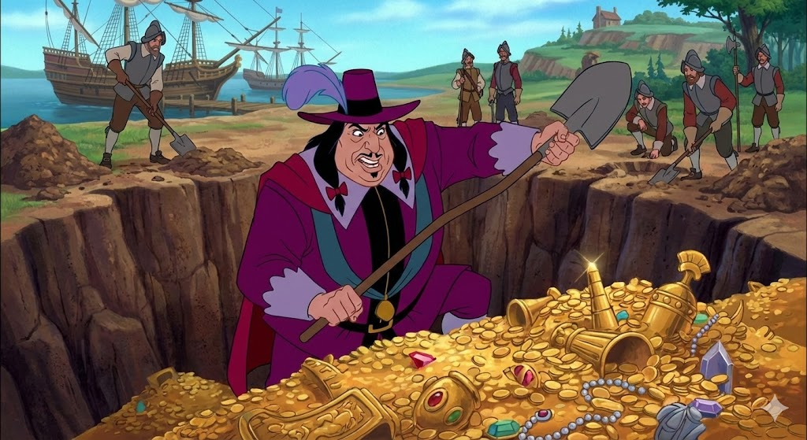
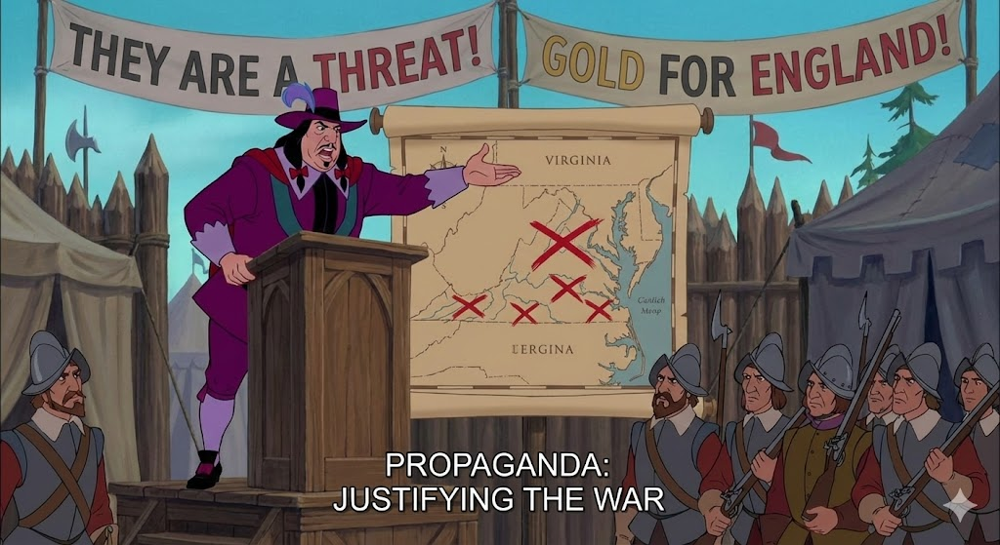

savings קפיטליזם: האדמה היא רק כסף
רדקליף מייצג את האידיאולוגיה הקפיטליסטית הקיצונית.
בשיר "שלי, שלי, שלי", אנו רואים שהיחס שלו לטבע הוא אינסטרומנטלי בלבד: היערות והנהרות חסרי חשיבות, אלא אם כן אפשר להפיק מהם רווח כלכלי (זהב).
הוא מייצג את העולם המערבי שבא "לצרוך" את העולם החדש.

warning דמוניזציה: יצירת מפלצת
כדי להצדיק את המלחמה ואת גזל הקרקעות, רדקליף משתמש בדמוניזציה (הפיכה לשד/מפלצת).
הוא מכנה את הילידים "פראים" (Savages), "שרצים" ו"חיות".
זוהי טקטיקה של הדרה קיצונית: אם האויב הוא לא אנושי, מותר להרוג אותו ולקחת את אדמתו ללא ייסורי מצפון.

campaign תעמולה וסדר יום
רדקליף שולט באנשיו באמצעות פחד. הוא קובע את סדר היום: הוא ממציא איום ("האינדיאנים תוקפים!") כדי להסיט את תשומת הלב מהכישלון שלו למצוא זהב.
הוא משתמש בכריזמה שלו כדי להסית את ההמון, בדיוק כמו שמנהיגים משתמשים בתקשורת מגויסת כדי ליצור "אויב משותף" ולאחד את העם.